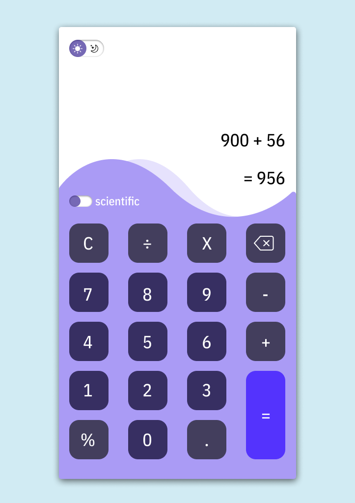
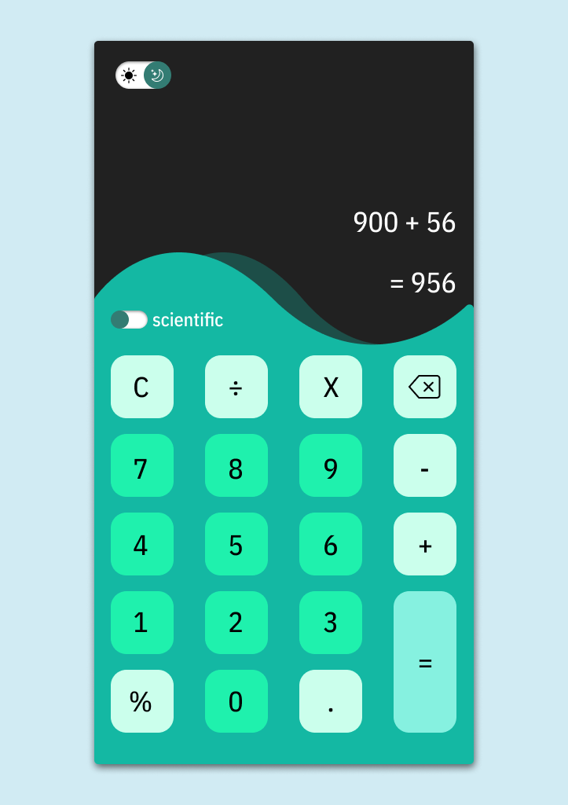

Restauración fotografia antigua
Restauración de una fotografía antigua, se realizó mediante las herramientas de corrección de photoshop
tales como el tapón de clonar, los correctores puntuales y el rellenado según el contenido para las
zonas mas dañadas que tenian la misma textura. Luego de la restauración se utilizo una inteligencia
artificial para poder darle un color mas fiable a la foto original.


App Calculadora (Daily UI)
Esta es una calculadora que la diseñe para el challenge del Daily UI.
Personal
23 años, nací en Buenos aires, Argentina.
Habilidades
Técnico personal y profesional en informática, actualmente estudiando diseño ux/ui en EducacionIT.
Hobbies
Tengo como hobbie la fotografía y la edición de contenido audiovisual.